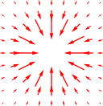

まず、帯電させた小さな物体
A
を用意し、静止させる。そして、その近くに別の帯電させた小さな物体
B
を様々な位置においてみて、
B
がどのような力を受けるかを観測する。この観測用の物体
B
のことを試験電荷と呼ぶ。これにより、どのような位置関係の時にどのような力が働くのかが分かる。ただし、物体の形状による影響や、相互作用によって電荷の偏りが生じるのを除くために、
A,B
はなるべく小さな物体とし、あまり近づけ過ぎないようにする。このような理想化した電荷のことを、点電荷という。

そのような実験を行った結果、以下のことが知られている。即ち、原点に
A
を置いた時、位置
x
にある試験電荷
B
が受ける力
f(x)
は、以下のような逆2乗則に従う：
f(x)=αˆx|x|2(1)f(x)
をベクトル場で表すと、右図（
α
が負の場合）のように、金属球の中心から放射状の向きを持ち、大きさ
|f|
は中心からの距離の2乗に反比例する。
α
は、
A,B
の電荷に依存する係数である。また、
α
の符号は、
A,B
が同符号の電荷を持っていれば「+」（反発力）、異符号であれば「-」（引力）となる。
電荷は、クーロン力に比例するように定量化すればよいだろう（質量の定量化が重力に比例するようにできたのと同じことを期待している）。まず、基準となる適当な点電荷
A
を用意して、その電荷を1クーロン（
1C
）と定義する。これを用いて未知の点電荷
B
の電荷を定量するには、試験電荷を用意して、
A
と
B
の周りでのクーロン力を測定すればよい。例えば、試験電荷を
1m
に近づけた時に、
B
から試験電荷が受ける力が
A
の場合の
2
倍になるならば、
B
は
2C
の電荷を持つ。より詳しく言えば、
A，B
に対する式(1)の係数を測定した結果がそれぞれ
kA,kB
であったとすると、
B
の電荷
qB
は、
qB=kA/kB[C]
となるわけである。
以上の定量化のもとで、原点に
qA[C]
の点電荷を置いた時に、点
x
に置かれた電荷
q[C]
をもつ点電荷が受けるクーロン力
f
は、以下のようになる：
f=keqqAˆx|x|2ke≡8.988⋯×109C−2⋅kg⋅m3⋅s−2(2)
これをクーロンの法則といい、係数
ke
をクーロン定数という。分子に電荷の積が現れているのは、作用反作用の法則により
A
が
B
から受ける力が
fA=−f
となるからである。作用反作用の法則が成り立っていなかったら、例えば棒の両端に
A,B
を取り付けた時、棒全体にかかる力
fA+fB
が
0
でないことになり、棒が勝手に加速し直感的にも不自然である。
ところで、式(6)の被積分関数は、
x′=x
において発散する。そのため、この点の周辺で区分求積は定義できないように見える。しかし直感的には、点
x
にある電荷が、同じ位置にでの電場に影響するとは思えない。実際、数学的にも、発散する部分からの寄与は消えることが言える（【1.3-注1】）。よって結局、発散する部分をくりぬいた状態で積分を定義し、くりぬいた部分を小さくする極限を取ることで問題なく定義できる。
無限に伸びた直線電荷の周りの電場
E(x)
は、以下のようになる：
E(x)=2keρˆx⊥|x⊥|
ただし、直線電荷は、原点を通り、線密度は定数
ρ[C⋅m−1]
とする。
x⊥
は、
x
を電荷直線と垂直な方向へ正射影したものである。導線と
x
の距離
|x⊥|
に反比例することが分かる。
導出
電荷が作る直線を
D
とおき、
D
と平行な単位ベクトルを
d
とおく。力学編の第15章のように、
D
上に長さパラメータ
l[m]
を入れて、
l
の積分に引き戻してやればよい：
E(x)=keρ∫x′∈Dx−x′|x−x′|3=keρ∫x′∈Dx⊥−x′|x⊥−x′|3=keρx⊥∫x′∈D1|x⊥−x′|3(引き戻し)=keρx⊥∫+∞−∞1|x⊥−ld|3dl=2keρx⊥∫∞01√l2+|x⊥|23dl=2keρx⊥1|x⊥|2
電荷が作る平面を
D
とおく。
D
は2次元なので2次元極座標での積分に引き戻せばよい：
E(x)=keρ∫x′∈Dx−x′|x−x′|3=keρ∫x′∈Dx⊥−x′|x⊥−x′|3=keρx⊥∫x′∈D1|x⊥−x′|3(引き戻し)=keρx⊥∫∞0dr∫2π0rdθ1√r2+|x⊥|23=2πkeρx⊥⎡⎢
⎢⎣−1√r2+|x⊥|2⎤⎥
⎥⎦r=∞r=0=2πkeρˆx⊥